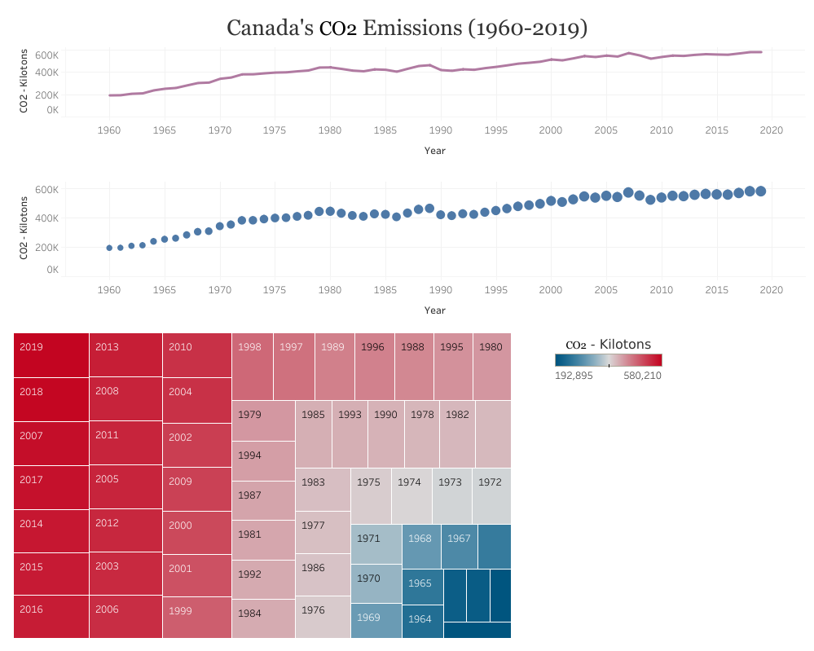

The objective of this project was to analyze and assess the amount of carbon dioxide recorded in the air throughout a given period of time, both internationally and domestically and then compare those findings to any health conditions that had a direct correlation to breathing oxygen depleted air caused by extreme CO2 concentrations. However, the data available did not contain any health-related information to analyze, so the focus solely became determining how much carbon dioxide was recorded worldwide to observe and draw a factual conclusion on where the cleanest quality of air is found globally.
The datasets were obtained from Kaggle, spanning a fifty-nine-year period (1960-2019). It included qualitative data of CO2 emission records in kilotons from each available country, along with records per each global region, as well.
In the exploratory data analysis phase, several interesting results were found. For example, I discovered that between 1960 and 1985 the region of North America far surpassed all other regions in CO2 production by almost double the amount of the carbon output, followed by Europe and Central Asia, and then East and Pacific Asia. With additional research, I discovered that in 1982, East and Pacific Asia began to surpass both Europe and Central Asia, with a steady incline in CO2 production, which was met by a massive spike in carbon dioxide output by Europe and Central Asia between 1990-1992. However, this was overtaken by East and Pacific Asia, with unprecedented CO2 productions that have gone unparalleled. These findings informed some of the subsequent decisions I made with respect to comparing changes across time, including a discernible focus on my home country of Canada.
In order to analyze the carbon dioxide data and generate insights out of it, I followed the process that looked at the data using the following visualizations:
Bubble Chart Visualization
Line Charts with Treemap
Map and Line Chart
Bubble Chart Visualization